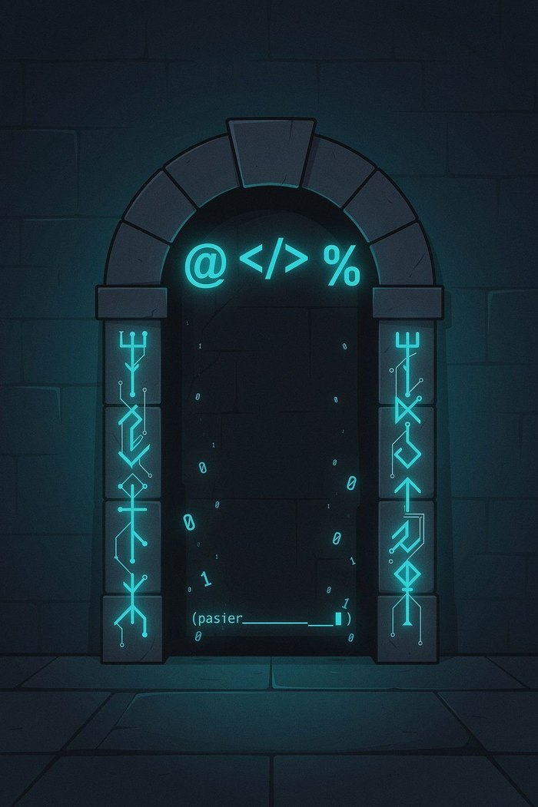
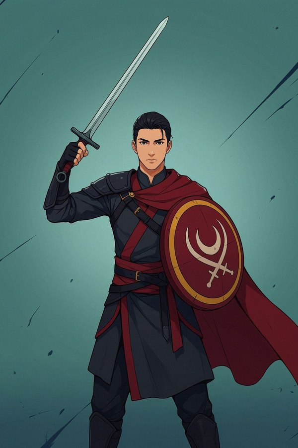
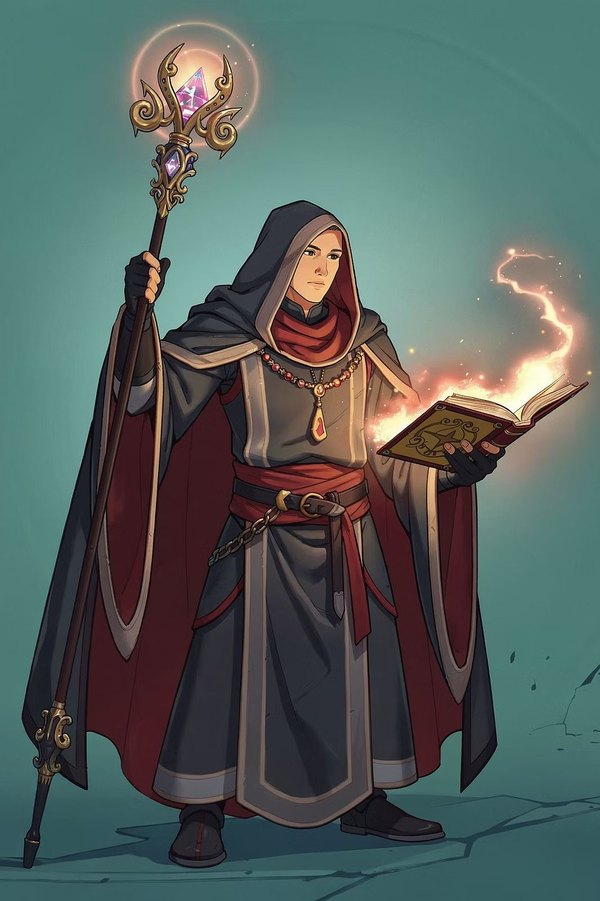
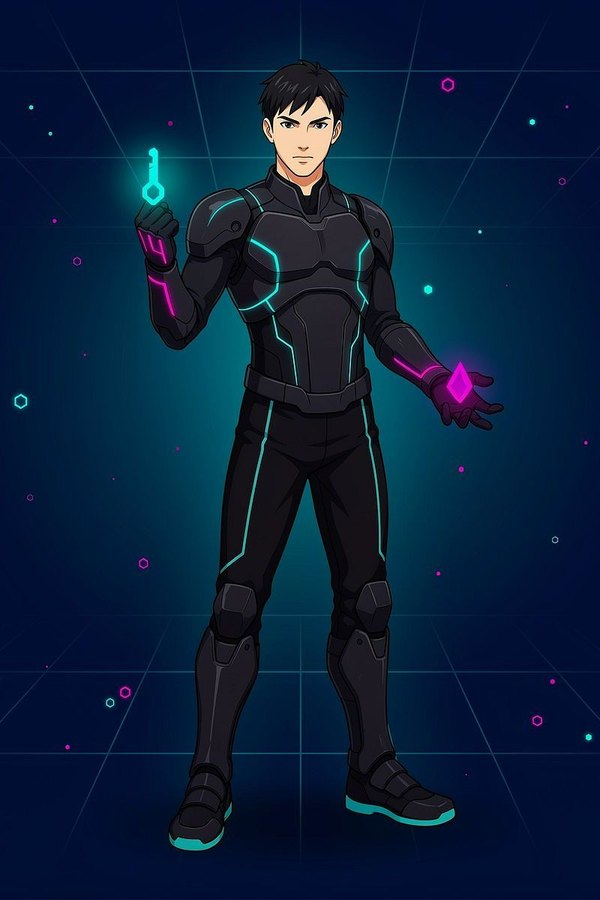
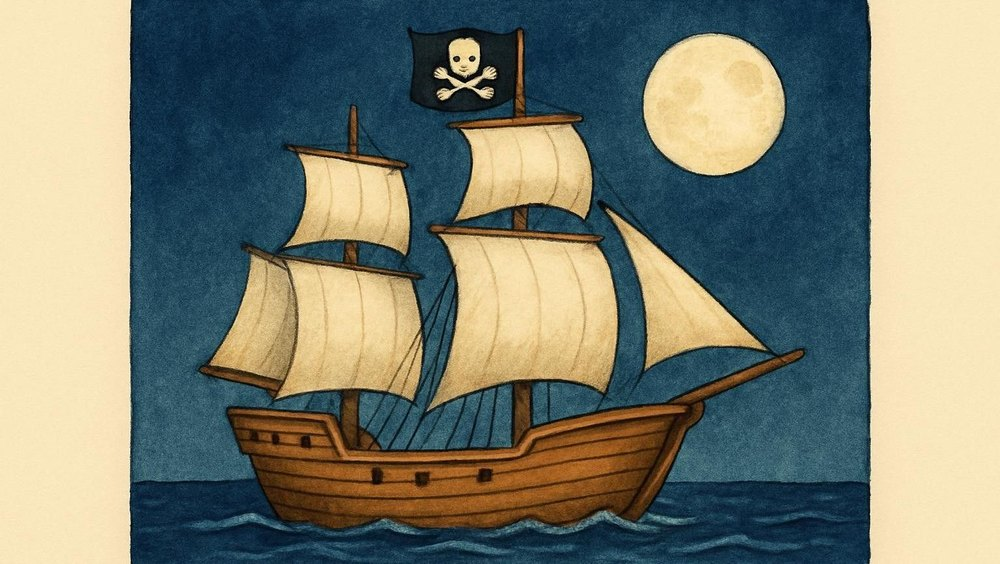
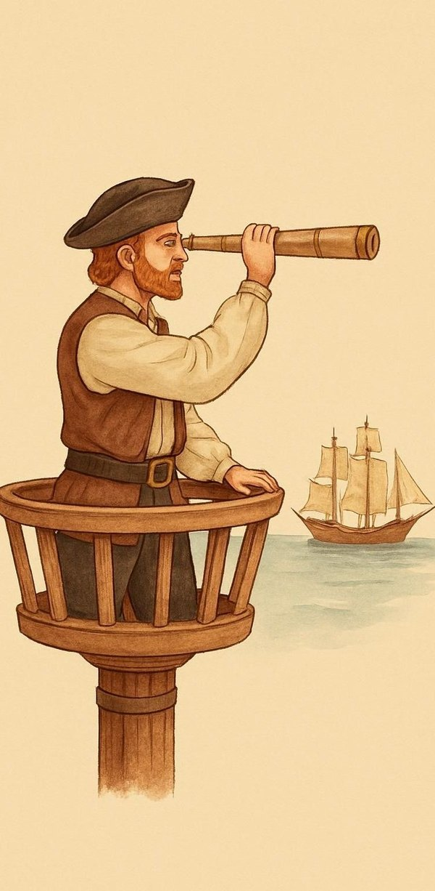
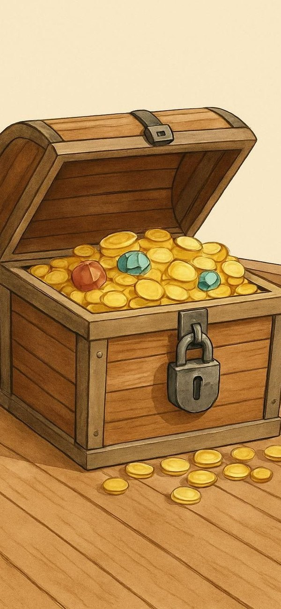
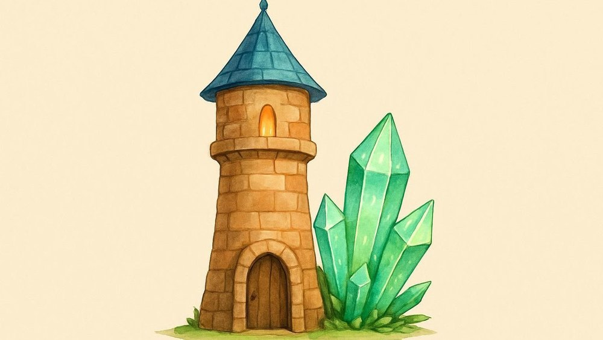
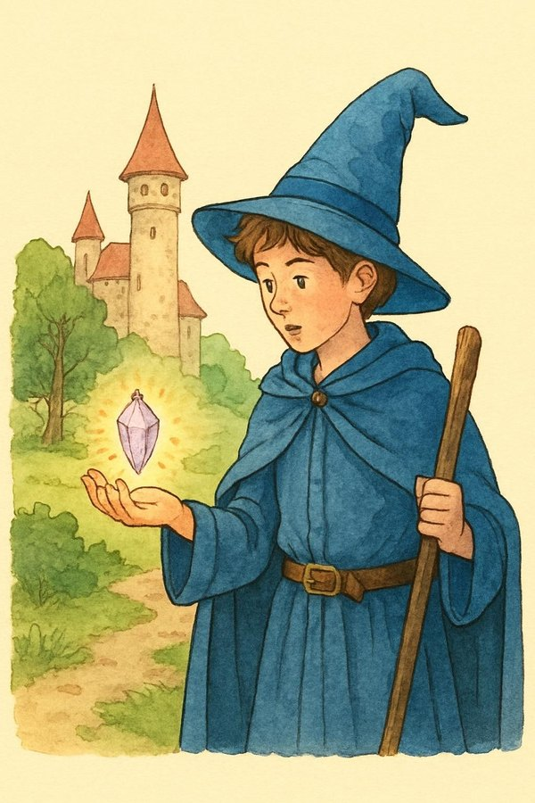

Eres el programador de seguridad del evento internacional Hack&Dragons 2026, un torneo donde estudiantes de ingeniería compiten resolviendo pruebas lógicas dentro de una mazmorra virtual.
Tu trabajo es escribir una aplicación en Java que decida si un jugador puede entrar a la Mazmorra Final y, en caso afirmativo, qué recompensa inicial recibe.
La aplicación debe pedir por teclado los siguientes datos del jugador (usa tipos primitivos adecuados para cada dato):
La aplicación debe mostrar en pantalla uno de los siguientes mensajes finales:
"ACCESO DENEGADO" "ACCESO CONCEDIDO - RECOMPENSA: [nombre de la recompensa]"
Si el jugador tiene menos de 18 puntos de experiencia y además su energía es menor que 20.0, se considera un novato peligroso para sí mismo. En ese caso se muestra directamente:
ACCESO DENEGADO
y el programa termina sin evaluar el resto de reglas.
Un jugador puede entrar si:
(Es decir: o es competente, o está enchufado).
Si no cumple ninguna de esas condiciones, se mostrará:
ACCESO DENEGADO.
Si el jugador ha conseguido acceso, hay que asignarle una recompensa inicial distinta según su rol y algunas condiciones extra. Aquí es donde viene la parte interesante. Debes mostrar exactamente uno de estos textos:
Rol G — Guerrero

Si su energía es mayor o igual que 80.0, la recompensa es "ESPADA DE TITANIO +20 ataque". En caso contrario, "ESCUDO RECUPERADOR +10 defensa".
Rol M — Mago

Si el jugador no es VIP y su experiencia es menor que 60, la recompensa es "LIBRO DE HECHIZOS SOSPECHOSAMENTE ILEGAL". En cualquier otro caso para Mago, la recompensa es "BASTÓN ARCANO NIVEL 2".
Rol I — Ingeniero de seguridad

Si tiene pase VIP y energía por encima de 50.0, la recompensa es "KIT DE EXPLOIT CERO-DAY". En caso contrario, "CAJA DE HERRAMIENTAS ANALÓGICAS (destornillador y paciencia)".
Rol A — Analista de datos
Si su experiencia es al menos 70 o su energía es al menos 90.0, la recompensa es "TABLET PREDICTIVA (probabilidad de victoria +12%)". En otro caso, "EXCEL PORTÁTIL (versión gratuita con anuncios)".
Rol desconocido
Si el usuario introduce una letra de rol distinta de G, M, I o A, el programa debe mostrar:
ACCESO CONCEDIDO - RECOMPENSA: ROL DESCONOCIDO, SIN EQUIPO INICIAL
Para decidirlo, se deben aplicar TODAS estas reglas en el orden que se indica:
&&, || y !PSeInt no tiene un «terminar aquí»: la regla de veto va en el primer Si y el resto, dentro de su Sino. Tampoco tiene operador ternario. El pase VIP se escribe como Verdadero o Falso, y el rol en mayúscula.
Algoritmo MazmorraHacker
Definir experiencia Como Entero;
Definir energia Como Real;
Definir vip Como Logico;
Definir rol, recompensa Como Caracter;
Escribir "Nivel de experiencia (0 a 100):";
Leer experiencia;
Escribir "Energía actual (0 a 100):";
Leer energia;
Escribir "¿Tiene pase VIP? (Verdadero o Falso):";
Leer vip;
Escribir "Rol (G, M, I o A):";
Leer rol;
Si (experiencia < 18) Y (energia < 20) Entonces
Escribir "ACCESO DENEGADO";
SiNo
Si ((experiencia >= 50) Y (energia >= 35)) O vip Entonces
Si rol = "G" Entonces
Si energia >= 80 Entonces
recompensa <- "ESPADA DE TITANIO +20 ataque";
SiNo
recompensa <- "ESCUDO RECUPERADOR +10 defensa";
FinSi
SiNo
Si rol = "M" Entonces
Si (NO vip) Y (experiencia < 60) Entonces
recompensa <- "LIBRO DE HECHIZOS SOSPECHOSAMENTE ILEGAL";
SiNo
recompensa <- "BASTÓN ARCANO NIVEL 2";
FinSi
SiNo
Si rol = "I" Entonces
Si vip Y (energia > 50) Entonces
recompensa <- "KIT DE EXPLOIT CERO-DAY";
SiNo
recompensa <- "CAJA DE HERRAMIENTAS ANALÓGICAS (destornillador y paciencia)";
FinSi
SiNo
Si rol = "A" Entonces
Si (experiencia >= 70) O (energia >= 90) Entonces
recompensa <- "TABLET PREDICTIVA (probabilidad de victoria +12%)";
SiNo
recompensa <- "EXCEL PORTÁTIL (versión gratuita con anuncios)";
FinSi
SiNo
recompensa <- "ROL DESCONOCIDO, SIN EQUIPO INICIAL";
FinSi
FinSi
FinSi
FinSi
Escribir "ACCESO CONCEDIDO - RECOMPENSA: ", recompensa;
SiNo
Escribir "ACCESO DENEGADO";
FinSi
FinSi
FinAlgoritmoEl enunciado pide Java, así que también tienes esta versión. Usa if, else if, un ternario, if anidados y un return para terminar antes de tiempo.
import java.util.Scanner;
public class MazmorraHacker {
public static void main(String[] args) {
Scanner teclado = new Scanner(System.in);
System.out.print("Nivel de experiencia (0 a 100): ");
int experiencia = teclado.nextInt();
System.out.print("Energía actual (0 a 100): ");
double energia = teclado.nextDouble();
System.out.print("¿Tiene pase VIP? (true o false): ");
boolean vip = teclado.nextBoolean();
System.out.print("Rol (G, M, I o A): ");
char rol = teclado.next().charAt(0);
if (experiencia < 18 && energia < 20.0) {
System.out.println("ACCESO DENEGADO");
return;
}
if (!((experiencia >= 50 && energia >= 35.0) || vip)) {
System.out.println("ACCESO DENEGADO");
return;
}
String recompensa;
if (rol == 'G') {
recompensa = energia >= 80.0 ? "ESPADA DE TITANIO +20 ataque"
: "ESCUDO RECUPERADOR +10 defensa";
} else if (rol == 'M') {
if (!vip && experiencia < 60) {
recompensa = "LIBRO DE HECHIZOS SOSPECHOSAMENTE ILEGAL";
} else {
recompensa = "BASTÓN ARCANO NIVEL 2";
}
} else if (rol == 'I') {
if (vip && energia > 50.0) {
recompensa = "KIT DE EXPLOIT CERO-DAY";
} else {
recompensa = "CAJA DE HERRAMIENTAS ANALÓGICAS (destornillador y paciencia)";
}
} else if (rol == 'A') {
if (experiencia >= 70 || energia >= 90.0) {
recompensa = "TABLET PREDICTIVA (probabilidad de victoria +12%)";
} else {
recompensa = "EXCEL PORTÁTIL (versión gratuita con anuncios)";
}
} else {
recompensa = "ROL DESCONOCIDO, SIN EQUIPO INICIAL";
}
System.out.println("ACCESO CONCEDIDO - RECOMPENSA: " + recompensa);
}
}
Un barco pirata navega de noche en busca de un galeón cargado de oro. El vigía debe observar el horizonte y avisar al capitán cuando detecte un barco enemigo. Tras enfrentarse a la tripulación enemiga, los piratas podrán intentar abrir un cofre que contiene un valioso tesoro.

El programa solicitará al usuario si el vigía ha detectado un barco enemigo. Podrá introducir 1 si lo ha visto o 0 si todavía no ha encontrado ningún barco.
Mientras no detecte ningún barco enemigo, el programa mostrará el mensaje:
El vigía continúa observando el horizonte...
A continuación, volverá a solicitar una respuesta.
Cuando el usuario introduzca 1, la vigilancia terminará y se mostrarán los siguientes mensajes:
¡Capitán, barco enemigo a la vista! ¡Preparaos para el abordaje!
Si el usuario introduce un valor distinto de 0 o 1, se mostrará el mensaje:
Respuesta no válida. Introduce 1 para avistar un barco o 0 para continuar vigilando.
En ese caso, deberá volver a solicitarse una respuesta.

Tras derrotar a la tripulación enemiga, los piratas encuentran un cofre protegido por una combinación numérica secreta: 1724.
El programa solicitará repetidamente una combinación hasta que el usuario introduzca la correcta. Después de cada intento, se mostrará el mensaje correspondiente:
Si el número introducido es inferior a 1724:
La combinación secreta es mayor.
Si el número introducido es superior a 1724:
La combinación secreta es menor.
Si el número introducido es correcto:
¡El cofre se ha abierto! ¡Habéis encontrado el tesoro pirata!
Las dos partes se repiten al menos una vez, así que encaja Repetir ... Hasta Que.
Algoritmo VigiaPirata
Definir respuesta, combinacion Como Entero;
Repetir
Escribir "¿Ha detectado el vigía un barco enemigo? (1 sí, 0 no):";
Leer respuesta;
Si respuesta = 0 Entonces
Escribir "El vigía continúa observando el horizonte...";
SiNo
Si respuesta <> 1 Entonces
Escribir "Respuesta no válida. Introduce 1 para avistar un barco o 0 para continuar vigilando.";
FinSi
FinSi
Hasta Que respuesta = 1
Escribir "¡Capitán, barco enemigo a la vista!";
Escribir "¡Preparaos para el abordaje!";
Repetir
Escribir "Introduce la combinación del cofre:";
Leer combinacion;
Si combinacion < 1724 Entonces
Escribir "La combinación secreta es mayor.";
SiNo
Si combinacion > 1724 Entonces
Escribir "La combinación secreta es menor.";
FinSi
FinSi
Hasta Que combinacion = 1724
Escribir "¡El cofre se ha abierto!";
Escribir "¡Habéis encontrado el tesoro pirata!";
FinAlgoritmoimport java.util.Scanner;
public class VigiaPirata {
public static void main(String[] args) {
Scanner teclado = new Scanner(System.in);
int respuesta;
do {
System.out.print("¿Ha detectado el vigía un barco enemigo? (1 sí, 0 no): ");
respuesta = teclado.nextInt();
if (respuesta == 0) {
System.out.println("El vigía continúa observando el horizonte...");
} else if (respuesta != 1) {
System.out.println("Respuesta no válida. Introduce 1 para avistar un barco o 0 para continuar vigilando.");
}
} while (respuesta != 1);
System.out.println("¡Capitán, barco enemigo a la vista!");
System.out.println("¡Preparaos para el abordaje!");
int combinacion;
do {
System.out.print("Introduce la combinación del cofre: ");
combinacion = teclado.nextInt();
if (combinacion < 1724) {
System.out.println("La combinación secreta es mayor.");
} else if (combinacion > 1724) {
System.out.println("La combinación secreta es menor.");
}
} while (combinacion != 1724);
System.out.println("¡El cofre se ha abierto!");
System.out.println("¡Habéis encontrado el tesoro pirata!");
}
}

En el reino de Eldoria, un aprendiz de mago debe explorar una torre encantada para recuperar un cristal mágico. Sin embargo, la torre está protegida por un hechizo que consume su energía cada vez que realiza determinadas acciones. Desarrolla una aplicación en Java que permita al aprendiz explorar la torre mientras conserve energía mágica. Al comenzar, el programa solicitará la cantidad inicial de energía mágica del aprendiz. A continuación, mostrará repetidamente el siguiente menú, junto con la energía disponible:
El usuario deberá introducir el número de la acción que desea realizar. El programa ejecutará la acción correspondiente y actualizará la energía disponible. Se deberán tener en cuenta las siguientes condiciones:
La condición del ciclo recoge las dos formas de salir: quedarse sin energía o abandonar.
Algoritmo TorreDelMago
Definir energia, opcion Como Entero;
Definir abandona Como Logico;
Escribir "Energía mágica inicial:";
Leer energia;
abandona <- Falso;
Mientras (energia > 0) Y (NO abandona) Hacer
Escribir "Energía disponible: ", energia;
Escribir "1 Lanzar un hechizo";
Escribir "2 Abrir un cofre";
Escribir "3 Descansar";
Escribir "4 Abandonar la torre";
Leer opcion;
Segun opcion Hacer
1:
energia <- energia - 3;
2:
energia <- energia - 2;
3:
energia <- energia + 1;
4:
abandona <- Verdadero;
De Otro Modo:
Escribir "Opción no válida.";
FinSegun
Si energia < 0 Entonces
energia <- 0;
FinSi
FinMientras
Si abandona Entonces
Escribir "La exploración ha terminado voluntariamente.";
SiNo
Escribir "No queda energía: no puedes continuar explorando.";
FinSi
FinAlgoritmoimport java.util.Scanner;
public class TorreDelMago {
public static void main(String[] args) {
Scanner teclado = new Scanner(System.in);
System.out.print("Energía mágica inicial: ");
int energia = teclado.nextInt();
boolean abandona = false;
while (energia > 0 && !abandona) {
System.out.println("Energía disponible: " + energia);
System.out.println("1 Lanzar un hechizo");
System.out.println("2 Abrir un cofre");
System.out.println("3 Descansar");
System.out.println("4 Abandonar la torre");
int opcion = teclado.nextInt();
switch (opcion) {
case 1 -> energia -= 3;
case 2 -> energia -= 2;
case 3 -> energia += 1;
case 4 -> abandona = true;
default -> System.out.println("Opción no válida.");
}
if (energia < 0) {
energia = 0;
}
}
if (abandona) {
System.out.println("La exploración ha terminado voluntariamente.");
} else {
System.out.println("No queda energía: no puedes continuar explorando.");
}
}
}